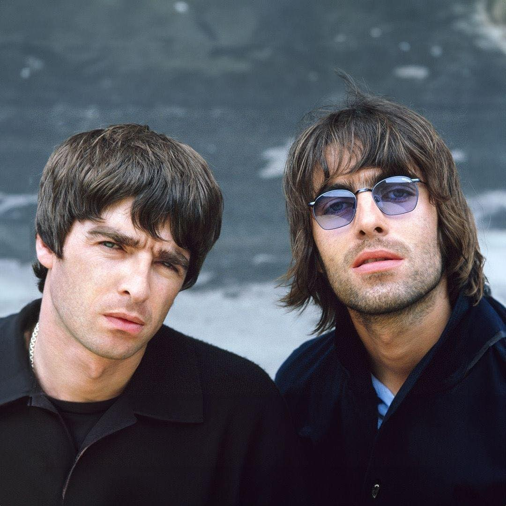

Don’t Look Back in Anger
Oasis
YoutubeLink

Slip inside the eye of your mind
Don't you know you might find
A better place to play?
You said that you'd never been
But all the things that you've seen
Slowly fade away
So I start a revolution from my bed
'Cause you said the brains I had went to my head
Step outside, summertime's in bloom
Stand up beside the fireplace
Take that look from off your face
You ain't ever gonna burn my heart out
And so, Sally can wait
She knows it's too late as we're walkin' on by
Her soul slides away
But "Don't look back in anger," I heard you say
Take me to the place where you go
Where nobody knows
If it's night or day
Please don't put your life in the hands
Of a rock 'n' roll band
Who'll throw it all away
I'm gonna start a revolution from my bed
'Cause you said the brains I had went to my head
Step outside, 'cause summertime's in bloom
Stand up beside the fireplace
Take that look from off your face
'Cause you ain't ever gonna burn my heart out
And so, Sally can wait
She knows it's too late as she's walking on by
My soul slides away
But "Don't look back in anger," I heard you say
So, Sally can wait
She knows it's too late as we're walking on by
Her soul slides away
But "Don't look back in anger," I heard you say
So, Sally can wait
She knows it's too late as she's walking on by
My soul slides away
But "Don't look back in anger
Don't look back in anger"
I heard you say
"At least not today